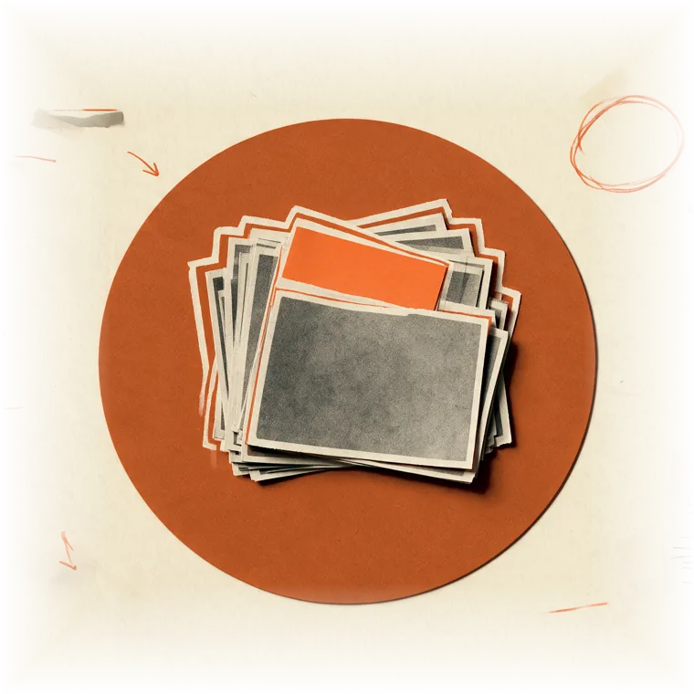

The gap between intent and outcome is where people live.
We study the hidden systems that shape that gap, and build quiet, local-first tools that help you narrow it.
Every system has three parts. Most attention goes to one.
Intent
The system as designed — the policy, the plan, the promise made in good faith.
Latency
Human judgement working in the gap — where delay, drift and discretion quietly decide things.
Outcome
Reality as lived — what actually happened, to actual people, measured honestly.
The ellipsis is the gap — and the gap is the work.
Systems, filed as index cards.
Scripts, templates and playbooks — each one filed, tested, and ready to be pulled. Nothing here is launched. Things are filed when they work, and opened on your own machine.

Open Vault — free
A public shelf of starter systems. Pull them from GitHub, keep them forever.
- Plain-text note structure
- Weekly review script
- Starter capture templates
Sector Packs
Deeper drawers, filed by trade:
- Real Estate
- Cafes & Hospitality
- Consultants
- Builders & Creatives
- Projects & Compliance
- Family OS
The letter
One considered essay at a time, on the systems that shape the space between intent and outcome. No noise, no urgency.
Form not loading? Email to be added instead.